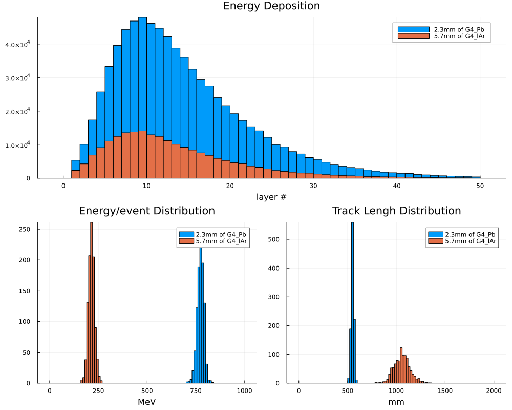
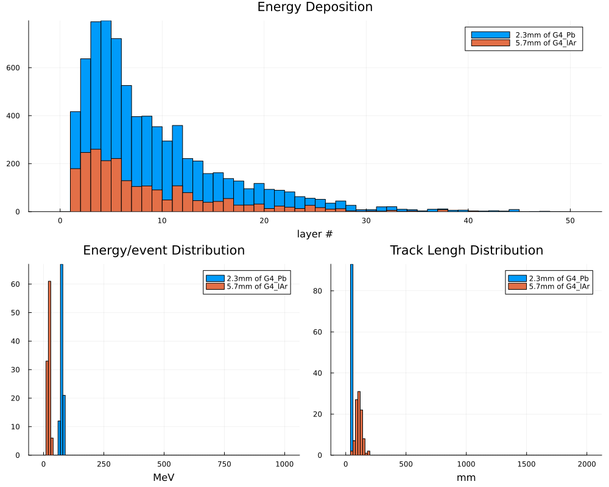
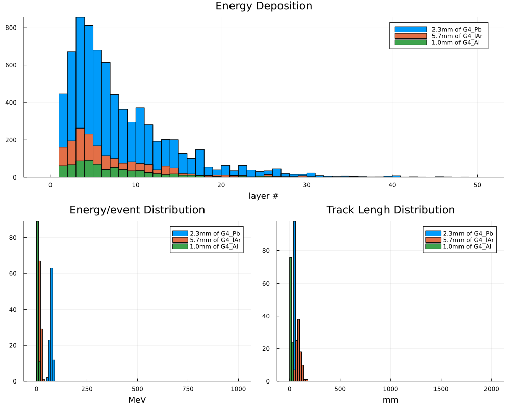

TestEM3 Example
using Geant4
using Geant4.SystemOfUnits
using FHist, Printf, Plots#---Define Detector Parameters struct--------------------------------------------------------------
include(joinpath(@__DIR__, "DetectorTestEm3.jl"))#---Define Simulation Data struct------------------------------------------------------------------
# In this example we share the same data structiure for all worker threads, so we need to protect
# with a lock
mutable struct TestEm3SimData <: G4JLSimulationData
#---Run data-----------------------------------------------------------------------------------
fParticle::CxxPtr{G4ParticleDefinition}
fEkin::Float64
fChargedStep::Int32
fNeutralStep::Int32
fN_gamma::Int32
fN_elec::Int32
fN_pos::Int32
fEnergyDeposit::Vector{Float64} # Energy deposit per event
fTrackLengthCh::Vector{Float64} # Track length per event
fEdepEventHistos::Vector{Hist1D}
fTrackLengthChHistos::Vector{Hist1D}
fEdepHistos::Vector{Hist1D}
fAbsorLabel::Vector{String}
TestEm3SimData() = new()
end
#---add function-----------------------------------------------------------------------------------
function add!(x::TestEm3SimData, y::TestEm3SimData)
x.fChargedStep += y.fChargedStep
x.fNeutralStep += y.fNeutralStep
x.fN_gamma += y.fN_gamma
x.fN_elec += y.fN_elec
x.fN_pos += y.fN_pos
x.fEdepEventHistos += y.fEdepEventHistos
x.fTrackLengthChHistos += y.fTrackLengthChHistos
x.fEdepHistos += y.fEdepHistos
endadd! (generic function with 1 method)#---Plot the Sumulation data-----------------------------------------------------------------------
function do_plot(data::TestEm3SimData)
(;fEdepHistos, fEdepEventHistos, fTrackLengthChHistos, fAbsorLabel) = data
lay = @layout [°; ° °]
p = plot(layout=lay, show=true, size=(1000,800))
for (h, l) in zip(fEdepHistos, fAbsorLabel)
plot!(subplot=1, h, title="Energy Deposition", xlabel="layer #", label=l, show=true)
end
for (h, l) in zip(fEdepEventHistos, fAbsorLabel)
plot!(subplot=2, h, title="Energy/event Distribution", label=l, xlabel="MeV")
end
for (h, l) in zip(fTrackLengthChHistos, fAbsorLabel)
plot!(subplot=3, h, title="Track Lengh Distribution", label=l, xlabel="mm")
end
display("image/png", p)
enddo_plot (generic function with 1 method)#---Particle Gun initialization--------------------------------------------------------------------
particlegun = G4JLGunGenerator(particle = "e-",
energy = 1GeV,
direction = G4ThreeVector(1,0,0),
position = G4ThreeVector(0,0,0)) # temporary potition, will update once the detector is constructed
G4JLGunGenerator("ParticleGun", Geant4.G4JLParticleGunData(nothing, "e-", G4ThreeVector(1.0,0.0,0.0), G4ThreeVector(0.0,0.0,0.0), 1000.0), Geant4.var"#init#19"(), Geant4.var"#gen#20"(), G4JLGeneratorAction[])#--------------------------------------------------------------------------------------------------
#----Actions---------------------------------------------------------------------------------------
#--------------------------------------------------------------------------------------------------
#---Step action------------------------------------------------------------------------------------
function stepaction(step::G4Step, app::G4JLApplication)::Nothing
data = getSIMdata(app)
detector = app.detector
prepoint = GetPreStepPoint(step)
endPoint = GetPostStepPoint(step)
track = GetTrack(step)
# Return if step in not in the world volume
prepoint |> GetPhysicalVolume |> GetLogicalVolume |> GetMaterial == detector.fWorldMaterial && return nothing
particle = GetDefinition(track)
charge = GetPDGCharge(particle)
stepl = 0.
if charge != 0.
stepl = GetStepLength(step)
data.fChargedStep += 1
else
data.fNeutralStep += 1
end
edep = GetTotalEnergyDeposit(step) * GetWeight(track)
absorNum = GetCopyNumber(GetTouchable(prepoint), 0)
layerNum = GetCopyNumber(GetTouchable(prepoint), 1) + 1 # replicas copynumber starts at 0
data.fEnergyDeposit[absorNum] += edep
data.fTrackLengthCh[absorNum] += stepl
push!(data.fEdepHistos[absorNum], layerNum, edep)
nothing
end
#---Tracking pre-action----------------------------------------------------------------------------
let G4Gamma, G4Electron, G4Positron, first=true
global function pretrackaction(track::G4Track, app::G4JLApplication)::Nothing
if first
G4Gamma = FindParticle("gamma")
G4Electron = FindParticle("e-")
G4Positron = FindParticle("e+")
first = false
end
data = getSIMdata(app)
d = GetDefinition(track)
if d === G4Gamma
data.fN_gamma += 1
elseif d === G4Electron
data.fN_elec +=1
elseif d === G4Positron
data.fN_pos += 1
end
nothing
end
end
#---Tracking post-action---------------------------------------------------------------------------
function posttrackaction(track::G4Track, ::G4JLApplication)::Nothing
return
end
#---Begin Run Action-------------------------------------------------------------------------------
function beginrun(run::G4Run, app::G4JLApplication)::Nothing
data = getSIMdata(app)
(; fNbOfAbsor, fNbOfLayers, fAbsorMaterial, fAbsorThickness) = app.detector
gun = app.generator.data.gun
data.fParticle = GetParticleDefinition(gun)
data.fEkin = GetParticleEnergy(gun)
data.fN_gamma = data.fN_elec = data.fN_pos = 0
data.fChargedStep = data.fNeutralStep = 0
# init arrays
data.fEnergyDeposit = zeros(fNbOfAbsor)
data.fTrackLengthCh = zeros(fNbOfAbsor)
data.fEdepHistos = [Hist1D(Float64; bins=0.:1.0:fNbOfLayers) for i in 1:fNbOfAbsor]
data.fEdepEventHistos = [Hist1D(;bins=0:10:1000) for i in 1:fNbOfAbsor]
data.fTrackLengthChHistos = [Hist1D(;bins=0:20:2000) for i in 1:fNbOfAbsor]
data.fAbsorLabel = ["$(fAbsorThickness[i])mm of $(fAbsorMaterial[i] |> GetName |> String)" for i in 1:fNbOfAbsor]
return
end
#---End Run Action---------------------------------------------------------------------------------
function endrun(run::G4Run, app::G4JLApplication)::Nothing
#---end run action is called for each workwer thread and the master onc
if G4Threading!G4GetThreadId() == -1
data = app.simdata[1]
#---This is the master thread, so we need to add all the simuation results-----------------
for d in app.simdata[2:end]
add!(data, d)
end
nEvt = GetNumberOfEvent(run)
norm = nEvt > 0 ? 1/nEvt : 1.
@printf "------------------------------------------------------------\n"
@printf " Beam particle %s E = %.2f GeV\n" String(GetParticleName(data.fParticle)) data.fEkin/GeV
@printf " Mean number of gamma %.2f\n" data.fN_gamma*norm
@printf " Mean number of e- %.2f\n" data.fN_elec*norm
@printf " Mean number of e+ %.2f\n" data.fN_pos*norm
@printf " Mean number of charged steps %f\n" data.fChargedStep*norm
@printf " Mean number of neutral steps %f\n" data.fNeutralStep*norm
@printf "------------------------------------------------------------\n"
else
G4JL_println("end-run for worker $(G4Threading!G4GetThreadId())")
end
end
#---Begin Event Action-----------------------------------------------------------------------------
function beginevent(evt::G4Event, app::G4JLApplication)
data = getSIMdata(app)
fill!(data.fEnergyDeposit, 0.0)
fill!(data.fTrackLengthCh, 0.0)
return
end
#---End Event Action-------------------------------------------------------------------------------
function endevent(evt::G4Event, app::G4JLApplication)
data = getSIMdata(app)
(; fNbOfAbsor, fNbOfLayers) = app.detector
for i in 1:fNbOfAbsor
push!(data.fEdepEventHistos[i], data.fEnergyDeposit[i])
push!(data.fTrackLengthChHistos[i], data.fTrackLengthCh[i])
end
return
end
endevent (generic function with 1 method)#---Create the Application-------------------------------------------------------------------------
app = G4JLApplication(detector = TestEm3Detector(), # detector with parameters
simdata = TestEm3SimData(), # simulation data structure
generator = particlegun, # primary particle generator
nthreads = 8, # number of threads (MT)
physics_type = FTFP_BERT, # what physics list to instantiate
#----Actions--------------------------------
stepaction_method = stepaction, # step action method
pretrackaction_method = pretrackaction, # pre-tracking action
posttrackaction_method = posttrackaction, # post-tracking action
beginrunaction_method = beginrun, # begin-run action (initialize counters and histograms)
endrunaction_method = endrun, # end-run action (print summary)
begineventaction_method = beginevent, # begin-event action (initialize per-event data)
endeventaction_method = endevent # end-event action (fill histogram per event data)
);
#ui"/tracking/verbose 1"**************************************************************
Geant4 version Name: geant4-11-02 [MT] (8-December-2023)
<< in Multi-threaded mode >>
Copyright : Geant4 Collaboration
References : NIM A 506 (2003), 250-303
: IEEE-TNS 53 (2006), 270-278
: NIM A 835 (2016), 186-225
WWW : http://geant4.org/
**************************************************************#---Configure, Initialize and Run------------------------------------------------------------------
configure(app)
initialize(app)
SetParticlePosition(particlegun, G4ThreeVector(-app.detector.fWorldSizeX/2,0,0)) # Only now is known the size of the 'world'Building Geometry now!!!
### G4LevelReader: broken transition 0 from level 24 to 24 for isotope Z= 89 A= 219 - use ground levelStart the initial run
beamOn(app, 1000)
do_plot(app.simdata[1])G4WT4 > end-run for worker 4
G4WT2 > end-run for worker 2
G4WT3 > end-run for worker 3
G4WT6 > end-run for worker 6
G4WT1 > end-run for worker 1
G4WT5 > end-run for worker 5
G4WT0 > end-run for worker 0
G4WT7 > end-run for worker 7
------------------------------------------------------------
Beam particle e- E = 1.00 GeV
Mean number of gamma 521.45
Mean number of e- 896.18
Mean number of e+ 53.44
Mean number of charged steps 3735.684000
Mean number of neutral steps 3703.605000
------------------------------------------------------------
Change the particle gun energy
SetParticleEnergy(particlegun, 100MeV)
beamOn(app, 100)
do_plot(app.simdata[1])G4WT1 > end-run for worker 1
G4WT4 > end-run for worker 4
G4WT0 > end-run for worker 0
G4WT2 > end-run for worker 2
G4WT3 > end-run for worker 3
G4WT6 > end-run for worker 6
G4WT5 > end-run for worker 5
G4WT7 > end-run for worker 7
------------------------------------------------------------
Beam particle e- E = 0.10 GeV
Mean number of gamma 50.63
Mean number of e- 87.17
Mean number of e+ 4.89
Mean number of charged steps 367.930000
Mean number of neutral steps 362.830000
------------------------------------------------------------
Change the geometry and re-start the run
reinitialize(app, TestEm3Detector(absorThickness = [2.3mm, 5.7mm, 1mm],
absorMaterial = ["G4_Pb", "G4_lAr", "G4_Al"]))
beamOn(app, 100)
do_plot(app.simdata[1])Building Geometry now!!!
G4WT3 > end-run for worker 3
G4WT1 > end-run for worker 1
G4WT0 > end-run for worker 0
G4WT5 > end-run for worker 5
G4WT7 > end-run for worker 7
G4WT2 > end-run for worker 2
G4WT4 > end-run for worker 4
G4WT6 > end-run for worker 6
------------------------------------------------------------
Beam particle e- E = 0.10 GeV
Mean number of gamma 49.47
Mean number of e- 86.45
Mean number of e+ 4.92
Mean number of charged steps 397.900000
Mean number of neutral steps 451.630000
------------------------------------------------------------
@time beamOn(app, 10000)G4WT7 > end-run for worker 7
G4WT1 > end-run for worker 1
G4WT6 > end-run for worker 6
G4WT5 > end-run for worker 5
G4WT4 > end-run for worker 4
G4WT0 > end-run for worker 0
G4WT2 > end-run for worker 2
G4WT3 > end-run for worker 3
------------------------------------------------------------
Beam particle e- E = 0.10 GeV
Mean number of gamma 49.56
Mean number of e- 87.50
Mean number of e+ 4.68
Mean number of charged steps 397.205500
Mean number of neutral steps 466.789800
------------------------------------------------------------
6.188010 seconds (20.23 M allocations: 308.934 MiB)Change the definition of the action and re-start
function posttrackaction(track::G4Track, ::G4JLApplication)::Nothing
G4JL_println("Track ID: $(GetTrackID(track)) ended")
end
beamOn(app, 3)G4WT0 > end-run for worker 0
G4WT6 > end-run for worker 6
G4WT4 > end-run for worker 4
G4WT2 > end-run for worker 2
G4WT5 > end-run for worker 5
G4WT7 > Track ID: 1 ended
G4WT3 > Track ID: 1 ended
G4WT1 > Track ID: 1 ended
G4WT3 > Track ID: 21 ended
G4WT7 > Track ID: 17 ended
G4WT3 > Track ID: 22 ended
G4WT1 > Track ID: 26 ended
G4WT7 > Track ID: 18 ended
G4WT1 > Track ID: 27 ended
G4WT7 > Track ID: 16 ended
G4WT7 > Track ID: 19 ended
G4WT3 > Track ID: 20 ended
G4WT1 > Track ID: 25 ended
G4WT7 > Track ID: 15 ended
G4WT7 > Track ID: 20 ended
G4WT3 > Track ID: 24 ended
G4WT7 > Track ID: 14 ended
G4WT3 > Track ID: 26 ended
G4WT3 > Track ID: 28 ended
G4WT7 > Track ID: 22 ended
G4WT3 > Track ID: 27 ended
G4WT7 > Track ID: 25 ended
G4WT7 > Track ID: 26 ended
G4WT3 > Track ID: 25 ended
G4WT7 > Track ID: 24 ended
G4WT7 > Track ID: 27 ended
G4WT3 > Track ID: 29 ended
G4WT7 > Track ID: 23 ended
G4WT7 > Track ID: 28 ended
G4WT3 > Track ID: 23 ended
G4WT3 > Track ID: 19 ended
G4WT3 > Track ID: 31 ended
G4WT1 > Track ID: 28 ended
G4WT3 > Track ID: 30 ended
G4WT3 > Track ID: 18 ended
G4WT3 > Track ID: 32 ended
G4WT1 > Track ID: 24 ended
G4WT1 > Track ID: 30 ended
G4WT1 > Track ID: 29 ended
G4WT3 > Track ID: 17 ended
G4WT1 > Track ID: 23 ended
G4WT7 > Track ID: 21 ended
G4WT1 > Track ID: 31 ended
G4WT1 > Track ID: 22 ended
G4WT1 > Track ID: 32 ended
G4WT7 > Track ID: 30 ended
G4WT7 > Track ID: 29 ended
G4WT7 > Track ID: 13 ended
G4WT1 > Track ID: 21 ended
G4WT1 > Track ID: 34 ended
G4WT7 > Track ID: 33 ended
G4WT1 > Track ID: 33 ended
G4WT7 > Track ID: 35 ended
G4WT7 > Track ID: 37 ended
G4WT3 > Track ID: 34 ended
G4WT7 > Track ID: 36 ended
G4WT1 > Track ID: 20 ended
G4WT1 > Track ID: 37 ended
G4WT3 > Track ID: 38 ended
G4WT7 > Track ID: 34 ended
G4WT3 > Track ID: 41 ended
G4WT1 > Track ID: 36 ended
G4WT7 > Track ID: 41 ended
G4WT3 > Track ID: 40 ended
G4WT7 > Track ID: 40 ended
G4WT3 > Track ID: 39 ended
G4WT7 > Track ID: 39 ended
G4WT7 > Track ID: 38 ended
G4WT1 > Track ID: 35 ended
G4WT3 > Track ID: 37 ended
G4WT7 > Track ID: 32 ended
G4WT3 > Track ID: 44 ended
G4WT1 > Track ID: 19 ended
G4WT3 > Track ID: 43 ended
G4WT7 > Track ID: 42 ended
G4WT3 > Track ID: 42 ended
G4WT1 > Track ID: 38 ended
G4WT7 > Track ID: 44 ended
G4WT3 > Track ID: 36 ended
G4WT7 > Track ID: 43 ended
G4WT7 > Track ID: 31 ended
G4WT3 > Track ID: 46 ended
G4WT1 > Track ID: 18 ended
G4WT7 > Track ID: 12 ended
G4WT3 > Track ID: 45 ended
G4WT7 > Track ID: 45 ended
G4WT1 > Track ID: 39 ended
G4WT7 > Track ID: 11 ended
G4WT7 > Track ID: 46 ended
G4WT3 > Track ID: 35 ended
G4WT1 > Track ID: 17 ended
G4WT3 > Track ID: 47 ended
G4WT1 > Track ID: 41 ended
G4WT7 > Track ID: 10 ended
G4WT1 > Track ID: 43 ended
G4WT7 > Track ID: 48 ended
G4WT1 > Track ID: 45 ended
G4WT1 > Track ID: 44 ended
G4WT7 > Track ID: 47 ended
G4WT7 > Track ID: 50 ended
G4WT1 > Track ID: 42 ended
G4WT7 > Track ID: 51 ended
G4WT1 > Track ID: 47 ended
G4WT1 > Track ID: 46 ended
G4WT1 > Track ID: 40 ended
G4WT1 > Track ID: 16 ended
G4WT1 > Track ID: 15 ended
G4WT3 > Track ID: 33 ended
G4WT7 > Track ID: 49 ended
G4WT3 > Track ID: 48 ended
G4WT7 > Track ID: 53 ended
G4WT3 > Track ID: 49 ended
G4WT3 > Track ID: 16 ended
G4WT3 > Track ID: 50 ended
G4WT7 > Track ID: 52 ended
G4WT7 > Track ID: 54 ended
G4WT7 > Track ID: 55 ended
G4WT1 > Track ID: 49 ended
G4WT3 > Track ID: 15 ended
G4WT3 > Track ID: 52 ended
G4WT7 > Track ID: 9 ended
G4WT1 > Track ID: 48 ended
G4WT7 > Track ID: 59 ended
G4WT7 > Track ID: 60 ended
G4WT7 > Track ID: 58 ended
G4WT7 > Track ID: 61 ended
G4WT7 > Track ID: 57 ended
G4WT7 > Track ID: 64 ended
G4WT1 > Track ID: 14 ended
G4WT7 > Track ID: 63 ended
G4WT7 > Track ID: 62 ended
G4WT3 > Track ID: 51 ended
G4WT7 > Track ID: 56 ended
G4WT7 > Track ID: 67 ended
G4WT3 > Track ID: 54 ended
G4WT7 > Track ID: 66 ended
G4WT7 > Track ID: 65 ended
G4WT3 > Track ID: 55 ended
G4WT7 > Track ID: 8 ended
G4WT7 > Track ID: 7 ended
G4WT7 > Track ID: 68 ended
G4WT3 > Track ID: 53 ended
G4WT7 > Track ID: 69 ended
G4WT3 > Track ID: 59 ended
G4WT7 > Track ID: 6 ended
G4WT3 > Track ID: 58 ended
G4WT7 > Track ID: 70 ended
G4WT7 > Track ID: 5 ended
G4WT7 > Track ID: 71 ended
G4WT3 > Track ID: 57 ended
G4WT7 > Track ID: 4 ended
G4WT7 > Track ID: 72 ended
G4WT3 > Track ID: 56 ended
G4WT1 > Track ID: 51 ended
G4WT3 > Track ID: 14 ended
G4WT1 > Track ID: 55 ended
G4WT7 > Track ID: 3 ended
G4WT3 > Track ID: 61 ended
G4WT1 > Track ID: 57 ended
G4WT1 > Track ID: 56 ended
G4WT3 > Track ID: 60 ended
G4WT1 > Track ID: 54 ended
G4WT3 > Track ID: 13 ended
G4WT1 > Track ID: 60 ended
G4WT3 > Track ID: 63 ended
G4WT1 > Track ID: 59 ended
G4WT3 > Track ID: 62 ended
G4WT7 > Track ID: 75 ended
G4WT1 > Track ID: 58 ended
G4WT7 > Track ID: 83 ended
G4WT1 > Track ID: 61 ended
G4WT3 > Track ID: 12 ended
G4WT3 > Track ID: 65 ended
G4WT7 > Track ID: 85 ended
G4WT3 > Track ID: 64 ended
G4WT1 > Track ID: 62 ended
G4WT7 > Track ID: 84 ended
G4WT3 > Track ID: 11 ended
G4WT1 > Track ID: 53 ended
G4WT3 > Track ID: 66 ended
G4WT7 > Track ID: 82 ended
G4WT7 > Track ID: 88 ended
G4WT1 > Track ID: 63 ended
G4WT7 > Track ID: 87 ended
G4WT7 > Track ID: 86 ended
G4WT7 > Track ID: 81 ended
G4WT1 > Track ID: 52 ended
G4WT7 > Track ID: 89 ended
G4WT7 > Track ID: 80 ended
G4WT7 > Track ID: 91 ended
G4WT7 > Track ID: 90 ended
G4WT7 > Track ID: 79 ended
G4WT7 > Track ID: 93 ended
G4WT7 > Track ID: 92 ended
G4WT1 > Track ID: 50 ended
G4WT7 > Track ID: 78 ended
G4WT7 > Track ID: 94 ended
G4WT1 > Track ID: 68 ended
G4WT7 > Track ID: 77 ended
G4WT7 > Track ID: 95 ended
G4WT1 > Track ID: 70 ended
G4WT1 > Track ID: 69 ended
G4WT7 > Track ID: 76 ended
G4WT7 > Track ID: 98 ended
G4WT3 > Track ID: 10 ended
G4WT7 > Track ID: 100 ended
G4WT7 > Track ID: 101 ended
G4WT1 > Track ID: 67 ended
G4WT1 > Track ID: 72 ended
G4WT1 > Track ID: 71 ended
G4WT7 > Track ID: 99 ended
G4WT7 > Track ID: 104 ended
G4WT3 > Track ID: 9 ended
G4WT7 > Track ID: 103 ended
G4WT1 > Track ID: 66 ended
G4WT7 > Track ID: 102 ended
G4WT7 > Track ID: 97 ended
G4WT1 > Track ID: 75 ended
G4WT7 > Track ID: 96 ended
G4WT1 > Track ID: 74 ended
G4WT1 > Track ID: 73 ended
G4WT1 > Track ID: 65 ended
G4WT1 > Track ID: 77 ended
G4WT3 > Track ID: 68 ended
G4WT7 > Track ID: 74 ended
G4WT3 > Track ID: 73 ended
G4WT3 > Track ID: 76 ended
G4WT7 > Track ID: 105 ended
G4WT3 > Track ID: 75 ended
G4WT3 > Track ID: 74 ended
G4WT3 > Track ID: 72 ended
G4WT3 > Track ID: 77 ended
G4WT1 > Track ID: 76 ended
G4WT7 > Track ID: 73 ended
G4WT1 > Track ID: 64 ended
G4WT7 > Track ID: 112 ended
G4WT1 > Track ID: 79 ended
G4WT7 > Track ID: 114 ended
G4WT7 > Track ID: 115 ended
G4WT3 > Track ID: 71 ended
G4WT7 > Track ID: 113 ended
G4WT1 > Track ID: 81 ended
G4WT3 > Track ID: 79 ended
G4WT1 > Track ID: 85 ended
G4WT7 > Track ID: 116 ended
G4WT1 > Track ID: 84 ended
G4WT7 > Track ID: 111 ended
G4WT1 > Track ID: 83 ended
G4WT3 > Track ID: 81 ended
G4WT1 > Track ID: 82 ended
G4WT7 > Track ID: 117 ended
G4WT7 > Track ID: 110 ended
G4WT1 > Track ID: 80 ended
G4WT7 > Track ID: 118 ended
G4WT7 > Track ID: 109 ended
G4WT3 > Track ID: 84 ended
G4WT7 > Track ID: 108 ended
G4WT3 > Track ID: 83 ended
G4WT7 > Track ID: 119 ended
G4WT3 > Track ID: 82 ended
G4WT1 > Track ID: 87 ended
G4WT7 > Track ID: 107 ended
G4WT3 > Track ID: 80 ended
G4WT7 > Track ID: 123 ended
G4WT7 > Track ID: 122 ended
G4WT3 > Track ID: 86 ended
G4WT7 > Track ID: 121 ended
G4WT7 > Track ID: 120 ended
G4WT3 > Track ID: 85 ended
G4WT7 > Track ID: 106 ended
G4WT1 > Track ID: 86 ended
G4WT7 > Track ID: 124 ended
G4WT3 > Track ID: 78 ended
G4WT7 > Track ID: 2 ended
G4WT3 > Track ID: 70 ended
G4WT7 > Track ID: 127 ended
G4WT7 > Track ID: 126 ended
G4WT3 > Track ID: 87 ended
G4WT7 > Track ID: 125 ended
G4WT3 > Track ID: 69 ended
G4WT7 > end-run for worker 7
G4WT3 > Track ID: 88 ended
G4WT3 > Track ID: 67 ended
G4WT1 > Track ID: 78 ended
G4WT1 > Track ID: 88 ended
G4WT3 > Track ID: 89 ended
G4WT1 > Track ID: 13 ended
G4WT3 > Track ID: 93 ended
G4WT3 > Track ID: 96 ended
G4WT3 > Track ID: 98 ended
G4WT3 > Track ID: 97 ended
G4WT1 > Track ID: 90 ended
G4WT1 > Track ID: 97 ended
G4WT3 > Track ID: 95 ended
G4WT1 > Track ID: 98 ended
G4WT3 > Track ID: 100 ended
G4WT3 > Track ID: 99 ended
G4WT1 > Track ID: 96 ended
G4WT3 > Track ID: 94 ended
G4WT1 > Track ID: 99 ended
G4WT3 > Track ID: 101 ended
G4WT1 > Track ID: 95 ended
G4WT1 > Track ID: 100 ended
G4WT1 > Track ID: 94 ended
G4WT1 > Track ID: 101 ended
G4WT1 > Track ID: 93 ended
G4WT3 > Track ID: 92 ended
G4WT1 > Track ID: 102 ended
G4WT3 > Track ID: 102 ended
G4WT3 > Track ID: 106 ended
G4WT3 > Track ID: 105 ended
G4WT3 > Track ID: 104 ended
G4WT3 > Track ID: 103 ended
G4WT3 > Track ID: 91 ended
G4WT1 > Track ID: 92 ended
G4WT3 > Track ID: 90 ended
G4WT1 > Track ID: 106 ended
G4WT3 > Track ID: 107 ended
G4WT3 > Track ID: 109 ended
G4WT3 > Track ID: 108 ended
G4WT3 > Track ID: 8 ended
G4WT1 > Track ID: 105 ended
G4WT1 > Track ID: 104 ended
G4WT3 > Track ID: 111 ended
G4WT3 > Track ID: 115 ended
G4WT3 > Track ID: 117 ended
G4WT3 > Track ID: 116 ended
G4WT1 > Track ID: 103 ended
G4WT3 > Track ID: 114 ended
G4WT3 > Track ID: 119 ended
G4WT1 > Track ID: 91 ended
G4WT3 > Track ID: 118 ended
G4WT1 > Track ID: 107 ended
G4WT3 > Track ID: 113 ended
G4WT3 > Track ID: 120 ended
G4WT3 > Track ID: 112 ended
G4WT1 > Track ID: 89 ended
G4WT3 > Track ID: 121 ended
G4WT3 > Track ID: 110 ended
G4WT3 > Track ID: 122 ended
G4WT3 > Track ID: 124 ended
G4WT1 > Track ID: 12 ended
G4WT3 > Track ID: 127 ended
G4WT1 > Track ID: 111 ended
G4WT3 > Track ID: 129 ended
G4WT3 > Track ID: 128 ended
G4WT1 > Track ID: 110 ended
G4WT3 > Track ID: 126 ended
G4WT1 > Track ID: 109 ended
G4WT3 > Track ID: 131 ended
G4WT3 > Track ID: 130 ended
G4WT3 > Track ID: 132 ended
G4WT3 > Track ID: 133 ended
G4WT1 > Track ID: 108 ended
G4WT3 > Track ID: 125 ended
G4WT3 > Track ID: 136 ended
G4WT3 > Track ID: 135 ended
G4WT3 > Track ID: 134 ended
G4WT3 > Track ID: 123 ended
G4WT1 > Track ID: 11 ended
G4WT1 > Track ID: 118 ended
G4WT1 > Track ID: 117 ended
G4WT1 > Track ID: 119 ended
G4WT1 > Track ID: 120 ended
G4WT1 > Track ID: 116 ended
G4WT1 > Track ID: 115 ended
G4WT3 > Track ID: 7 ended
G4WT1 > Track ID: 114 ended
G4WT3 > Track ID: 139 ended
G4WT1 > Track ID: 113 ended
G4WT3 > Track ID: 138 ended
G4WT1 > Track ID: 112 ended
G4WT1 > Track ID: 121 ended
G4WT1 > Track ID: 122 ended
G4WT3 > Track ID: 137 ended
G4WT1 > Track ID: 10 ended
G4WT1 > Track ID: 124 ended
G4WT3 > Track ID: 6 ended
G4WT3 > Track ID: 141 ended
G4WT1 > Track ID: 126 ended
G4WT3 > Track ID: 143 ended
G4WT1 > Track ID: 131 ended
G4WT3 > Track ID: 144 ended
G4WT1 > Track ID: 130 ended
G4WT1 > Track ID: 129 ended
G4WT3 > Track ID: 142 ended
G4WT3 > Track ID: 146 ended
G4WT1 > Track ID: 128 ended
G4WT3 > Track ID: 145 ended
G4WT1 > Track ID: 127 ended
G4WT3 > Track ID: 140 ended
G4WT3 > Track ID: 5 ended
G4WT3 > Track ID: 147 ended
G4WT1 > Track ID: 125 ended
G4WT1 > Track ID: 133 ended
G4WT1 > Track ID: 132 ended
G4WT3 > Track ID: 4 ended
G4WT3 > Track ID: 150 ended
G4WT3 > Track ID: 149 ended
G4WT3 > Track ID: 148 ended
G4WT3 > Track ID: 3 ended
G4WT3 > Track ID: 151 ended
G4WT3 > Track ID: 2 ended
G4WT3 > Track ID: 152 ended
G4WT1 > Track ID: 123 ended
G4WT3 > end-run for worker 3
G4WT1 > Track ID: 136 ended
G4WT1 > Track ID: 138 ended
G4WT1 > Track ID: 137 ended
G4WT1 > Track ID: 135 ended
G4WT1 > Track ID: 139 ended
G4WT1 > Track ID: 134 ended
G4WT1 > Track ID: 140 ended
G4WT1 > Track ID: 9 ended
G4WT1 > Track ID: 143 ended
G4WT1 > Track ID: 142 ended
G4WT1 > Track ID: 141 ended
G4WT1 > Track ID: 8 ended
G4WT1 > Track ID: 144 ended
G4WT1 > Track ID: 7 ended
G4WT1 > Track ID: 147 ended
G4WT1 > Track ID: 146 ended
G4WT1 > Track ID: 145 ended
G4WT1 > Track ID: 6 ended
G4WT1 > Track ID: 149 ended
G4WT1 > Track ID: 148 ended
G4WT1 > Track ID: 5 ended
G4WT1 > Track ID: 151 ended
G4WT1 > Track ID: 154 ended
G4WT1 > Track ID: 155 ended
G4WT1 > Track ID: 153 ended
G4WT1 > Track ID: 157 ended
G4WT1 > Track ID: 156 ended
G4WT1 > Track ID: 152 ended
G4WT1 > Track ID: 158 ended
G4WT1 > Track ID: 159 ended
G4WT1 > Track ID: 150 ended
G4WT1 > Track ID: 160 ended
G4WT1 > Track ID: 4 ended
G4WT1 > Track ID: 161 ended
G4WT1 > Track ID: 3 ended
G4WT1 > Track ID: 163 ended
G4WT1 > Track ID: 165 ended
G4WT1 > Track ID: 168 ended
G4WT1 > Track ID: 167 ended
G4WT1 > Track ID: 166 ended
G4WT1 > Track ID: 164 ended
G4WT1 > Track ID: 169 ended
G4WT1 > Track ID: 162 ended
G4WT1 > Track ID: 2 ended
G4WT1 > Track ID: 172 ended
G4WT1 > Track ID: 171 ended
G4WT1 > Track ID: 170 ended
G4WT1 > end-run for worker 1
------------------------------------------------------------
Beam particle e- E = 0.10 GeV
Mean number of gamma 50.67
Mean number of e- 93.33
Mean number of e+ 6.33
Mean number of charged steps 410.666667
Mean number of neutral steps 440.333333
------------------------------------------------------------